Son tres robots que comparten una misma base de datos y un mismo panel. El Robot 1 y el Robot 2 trabajan a la vez, cada uno por su lado, todo el dia. El Robot 3 junta lo que dicen los dos sobre el mismo token y decide.
| Robot | Donde verlo en el panel | Que envia |
|---|---|---|
| Robot 1 | Paginas Tokens (todo lo detectado, con su ficha) y Alertas (cada aviso enviado) | Avisos de oportunidad (como mucho 10 al dia) y de peligro |
| Robot 2 | Pagina Telegram: menciones, mensajes resumidos en espanol, fuentes y canales encontrados | Nada directamente: alimenta a los otros dos |
| Robot 3 | Pagina Convergencia: cada token con las dos lecturas y su nivel. La seleccion final es el filtro "Convergencia fuerte" | Avisos de convergencia fuerte (como mucho 3 al dia) |
| Los tres | Portada (Resumen): una tarjeta por robot con su estado y sus cifras del dia. Ficha de cada token: seccion "Telegram y Robot 3" | Todos los avisos llegan por Telegram y por Discord |
Todo esta en el panel, https://crypto-radar.duckdns.org, con la misma contrasena de siempre.
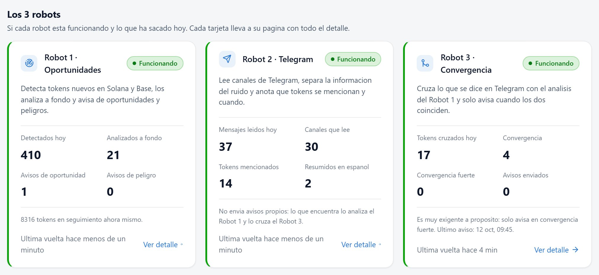
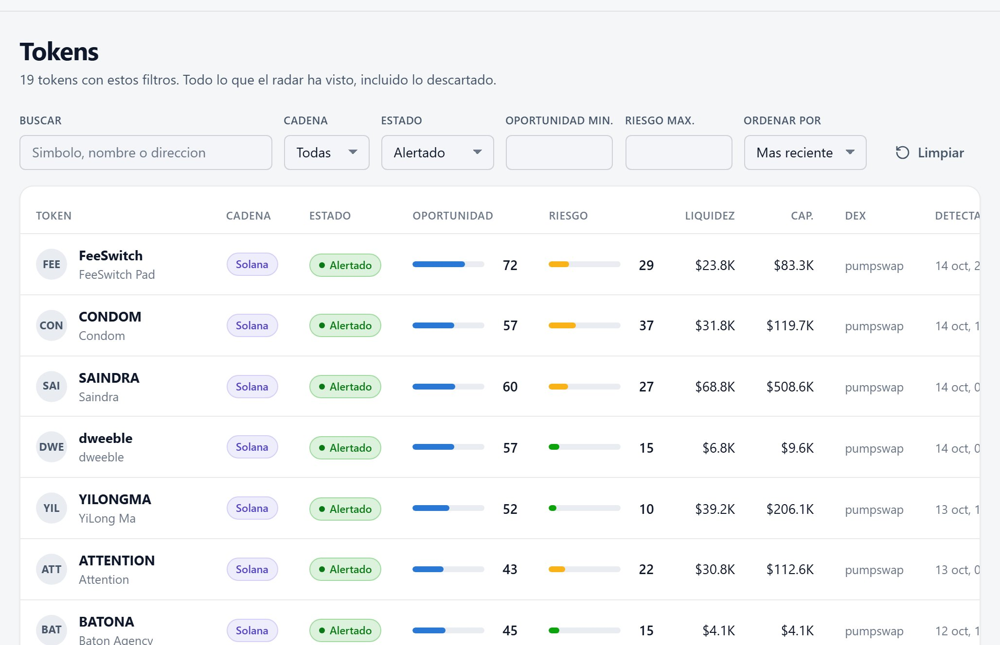
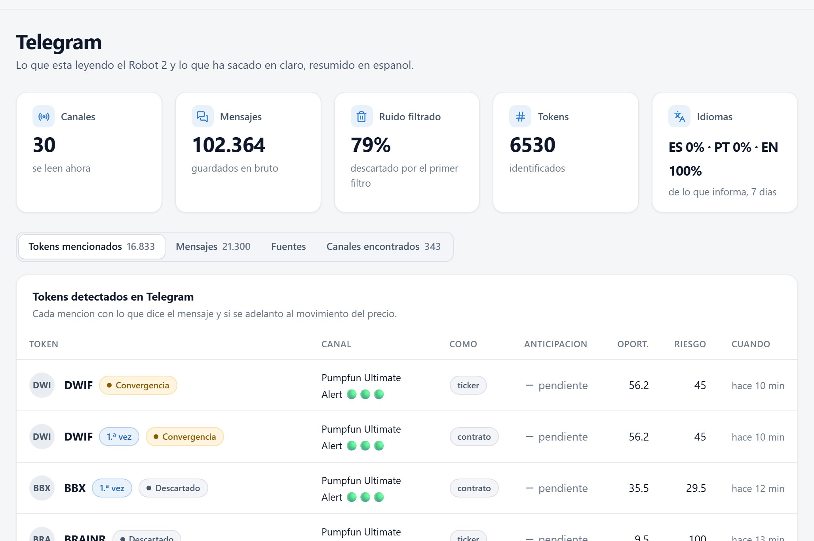
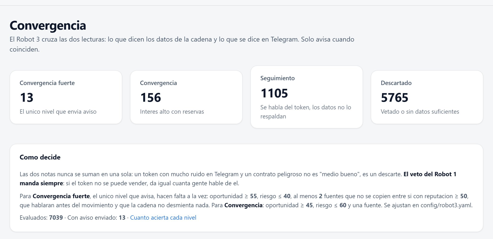
Desde Telegram, en el bot de avisos. /robots dice si cada robot esta funcionando y sus cifras del dia; /hoy, los tokens de los que te ha avisado hoy, con su enlace; /top, los mejores de las ultimas 24 horas que siguen en juego. El bot solo contesta a las cuentas autorizadas, y la tuya ya lo esta.
| Que mira | Como |
|---|---|
| Mercado | Liquidez real, capitalizacion, FDV, volumen a 5 min, 1 h, 6 h y 24 h, numero de compras y ventas y variacion del precio en cada periodo. |
| Principales carteras | Top 10 y top 20 descontando el pool, lo quemado y los contratos (si no, la concentracion sale falsa), la mayor cartera individual y el crecimiento de holders por hora. |
| Creador | Que parte del suministro conserva, cuantos tokens ha lanzado antes y como acabaron, y quien financio su cartera. |
| Seguridad del contrato | Solana: mint y freeze authority, Token-2022 y sus extensiones. Base: permisos del dueno, lista negra, honeypot, comisiones de compra y venta y si se pueden cambiar, contrato proxy, contrato verificado. En las dos: liquidez bloqueada, quemada o libre. |
| Movimientos sospechosos | Compras de varias carteras en el mismo bloque (bots), wash trading, volumen sin holders nuevos, carteras con saldos identicos, presion vendedora extrema, retirada de liquidez y desplome del precio. Las dos ultimas generan un aviso de peligro inmediato. |
| Si se puede comprar y vender | Solana: pide a Jupiter una cotizacion real de comprar y vender 200 dolares al momento y mide cuanto se perderia por el camino y cuanto se puede operar sin mover demasiado el precio. Si Jupiter no encuentra forma de vender, el token queda vetado. Base: Honeypot.is y GoPlus (honeypot y comisiones). |
Cada dato se contrasta con varias fuentes: la propia blockchain, GoPlus, RugCheck, Jupiter, Honeypot.is, DexScreener y GeckoTerminal. Si una no responde, el sistema anota que dato falto en lugar de inventarlo, y si falta algo critico el token se marca como "no evaluable" y no puede generar aviso. Todo lo que muestra el panel se puede comprobar en la blockchain con los enlaces de cada ficha.
Son dos notas de 0 a 100, calculadas por separado y que nunca se mezclan. Cada una suma puntos por motivos concretos, y en la ficha de cada token aparece escrito cada motivo con sus puntos. Las que llevan "hasta" suman mas cuanto mas fuerte es la senal.
| Motivo | Puntos |
|---|---|
| Punto de partida: token nuevo detectado y analizado | 25 |
| Seguridad limpia: sin mint, sin freeze y sin permisos peligrosos | +20 |
| Los holders crecen deprisa (de 20 a 120 nuevos por hora) | hasta +18 |
| Hay mas compras que ventas (de 1,2 a 2,5 veces) | hasta +15 |
| El creador ya lanzo antes algun token que funciono | +15 |
| Liquidez bloqueada o quemada | +12 |
| El volumen se acelera (la ultima hora es el 15 % o mas del dia) | +12 |
| Suministro bien repartido (top 10 real del 25 % o menos) | +12 |
| Sube bastante mas que el mercado general (10 % o mas por encima) | +12 |
| Liquidez suficiente para operar (de 15.000 a 60.000 dolares) | hasta +10 |
| El creador no conserva suministro relevante ni tiene historial malo | +10 |
| El precio sube de forma sostenida (+5 % o mas en 1 h) | +10 |
| Sin patrones de bots ni operaciones sospechosas | +10 |
| Publica web y redes sociales | +8 |
Con el mercado general flojo la oportunidad baja un 10 % y el riesgo sube 10 puntos; con el mercado muy fuerte baja un 8 %, para no confundir la subida de todo el mercado con meritos del token.
| Motivo | Puntos |
|---|---|
| Honeypot: se puede comprar pero no vender veto | +60 |
| Se ha retirado liquidez del pool veto | +45 |
| El creador ya lanzo tokens que acabaron mal | +35 |
| Mint authority activa: pueden crear mas tokens veto | +30 |
| Lista negra: pueden bloquear tu direccion veto | +30 |
| Freeze authority activa: pueden congelar tus tokens veto | +25 |
| Liquidez sin bloquear ni quemar (parcialmente bloqueada: +10) | +25 |
| El dueno puede cambiar comisiones o permisos | +25 |
| Wash trading: operaciones repetidas para inflar el volumen | hasta +25 |
| Las 10 mayores carteras concentran demasiado (del 45 % al 80 %) | hasta +25 |
| Comisiones altas (10 % o mas) o modificables | +20 |
| Una sola cartera con mas del 15 % | hasta +20 |
| El creador conserva mas del 5 % | hasta +20 |
| Liquidez muy baja (menos de 8.000 dolares) | hasta +20 |
| Varias carteras compraron en el mismo bloque (bots) | hasta +20 |
| Mucho volumen sin holders nuevos | hasta +20 |
| Contrato proxy: el codigo se puede sustituir | +15 |
| El creador lanza tokens en serie (4 o mas) | +15 |
| Mucha mas venta que compra en la ultima hora (2 a 1) | hasta +15 |
| Token-2022 con extensiones | +12 |
| Contrato sin verificar | +10 |
| Sin web ni redes sociales | +5 |
Vetos. Honeypot, lista negra, mint o freeze activas, liquidez retirada, no hay ruta de venta en Jupiter, el impacto en el precio hace imposible operar, o el riesgo total llega a 75. Un token vetado no genera ningun aviso, ni del Robot 1 ni del Robot 3.
Cuando avisa el Robot 1: oportunidad de 55 o mas, riesgo de 60 o menos y sin veto, con un maximo de 10 avisos de oportunidad al dia repartidos a lo largo de la jornada.
Todos los pesos y umbrales estan en ficheros de configuracion y se ajustan sin tocar codigo.
Para cada token mencionado en Telegram, el Robot 3 coge la lectura del Robot 1 (oportunidad, riesgo, vetos) y la del Robot 2 (cuantos canales hablan de el, si se copian entre si, su reputacion, si hablaron antes o despues de que se moviera el precio y que dicen exactamente), y le asigna un nivel:
| Nivel | Condiciones | Avisa |
|---|---|---|
| Convergencia fuerte | Todas a la vez:
|
Si, por Telegram y Discord. Maximo 3 al dia |
| Convergencia | Oportunidad de 45 o mas, riesgo de 60 o menos y al menos una fuente independiente. Interes alto, con reservas. | No |
| Seguimiento | Se habla del token en Telegram pero los datos del Robot 1 no lo respaldan lo suficiente. | No |
| Descartado | El Robot 1 lo veto o no se pudo comprobar lo suficiente. El veto gana siempre, hablen de el los canales que hablen. | No |
La reputacion de cada canal no la pone nadie a mano: sale de su historial real, de cuantas veces dio un token antes que nadie y con cuanta antelacion respecto al movimiento del precio. Y dos canales que publican lo mismo cambiando emojis y enlaces cuentan como una sola fuente.
Hasta hoy el Robot 3 ha evaluado 7.025 tokens: 13 en convergencia fuerte (todos con aviso), 155 en convergencia, 1.105 en seguimiento y 5.752 descartados.
Un token de principio a fin, con los datos de cada robot que justifican la decision final. Su ficha esta en el panel:
crypto-radar.duckdns.org/token/solana/DoVAVzViX8Bjy3r15nwikSaSbzE6dV4ovd28aWpJpump
| Hora | Quien | Que paso |
|---|---|---|
| 14:26 | Se crea su pool en PumpSwap (Solana). | |
| 14:28 | Robot 1 | Lo detecta, minuto y medio despues. Capitalizacion 24.600 dolares, liquidez 8.500. |
| 14:33 | Robot 2 | Primera mencion en Telegram, en el canal Pumpfun Ultimate Alert. |
| 14:36 | Robot 2 | Segundo canal: pumpdotfunalert. |
| 14:38 | Robot 2 | Tercer canal: KOLscope. Tres canales que no se copian entre si. |
| 14:43 | Robot 1 | Termina el analisis a fondo: oportunidad 75 (FUERTE), riesgo 27. Detalle en la tabla siguiente. |
| 14:45 | Robot 3 | Primer veredicto: Convergencia. |
| 14:46 | Robot 3 | Lo sube a Convergencia fuerte y sale el aviso por Telegram y por Discord. |
| 15:20 | Robot 1 | Aviso de peligro: el precio cae un 36 % en 5 minutos. Desde esa hora detecta tambien wash trading (volumen de 24 h de 48 veces la liquidez). |
| A favor | Dato | Puntos |
|---|---|---|
| Seguridad limpia | Mint y freeze authority revocadas | +20 |
| Liquidez asegurada | Bloqueada o quemada al 100 % | +12 |
| Reparto | 1.608 holders reales; top 10 con el 15,4 %, la mayor cartera con el 3,1 % | +12 |
| Creador | Conserva el 0 % del suministro | +10 |
| Interes creciente | La ultima hora concentra todo el volumen del dia; precio +794 % en 1 h, muy por encima del mercado | +12 +12 +10 |
| Liquidez | 62.000 dolares | +10 |
| Sin actividad sospechosa · web y redes | Ningun patron de bots en ese momento · web y X publicadas | +10 +8 |
| Oportunidad: 25 de partida + 116 a favor = 141 de 189 posibles | 75 | |
| En contra | Dato | Riesgo |
| Creador en serie | Habia lanzado 25 tokens antes (patron de fabrica de tokens) | +15 |
| Token-2022 con extensiones | Puede llevar comisiones de transferencia o delegado permanente | +12 |
| Riesgo: 15 + 12 | 27 | |
| Compra y venta | Cotizacion real de Jupiter: comprar y vender 200 dolares al momento costaba un 3,2 % (se recuperaba el 96,8 %). Fuentes consultadas: blockchain, RugCheck, GoPlus y Jupiter. | |
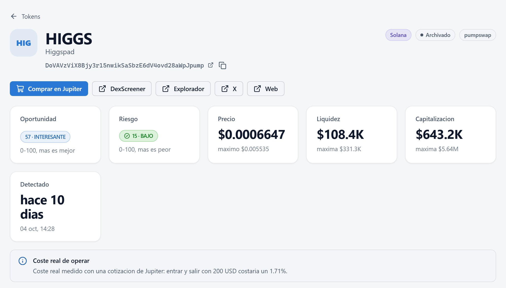
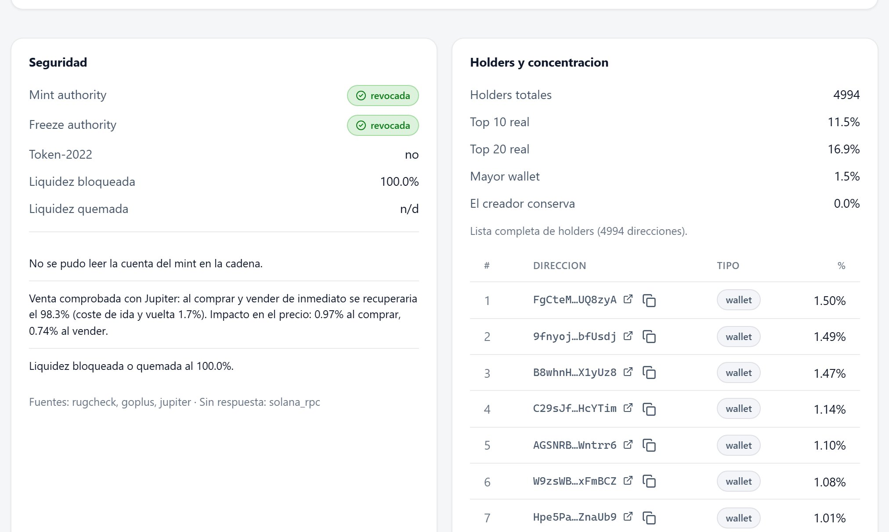
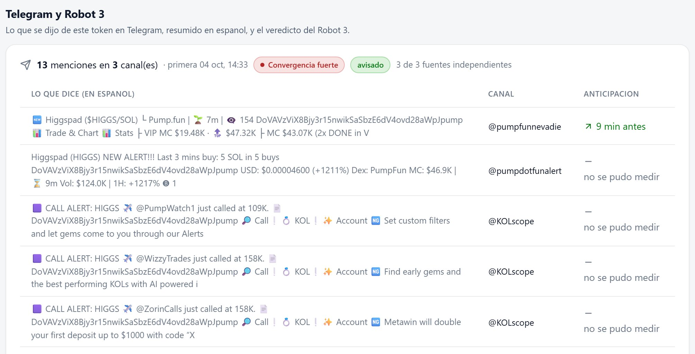
| Condicion para Convergencia fuerte | Pide | HIGGS | |
|---|---|---|---|
| Oportunidad (Robot 1) | 55 o mas | 75 | cumple |
| Riesgo (Robot 1) | 40 o menos | 27 | cumple |
| Vetos (Robot 1) | ninguno | ninguno | cumple |
| Canales independientes (Robot 2) | 2 o mas | 3 | cumple |
| Reputacion media de esos canales (Robot 2) | 50 o mas | 51 | cumple |
| Informacion antes del movimiento del precio | si | 9 min antes | cumple |
| Contradicciones entre mensajes y blockchain | ninguna | ninguna | cumple |
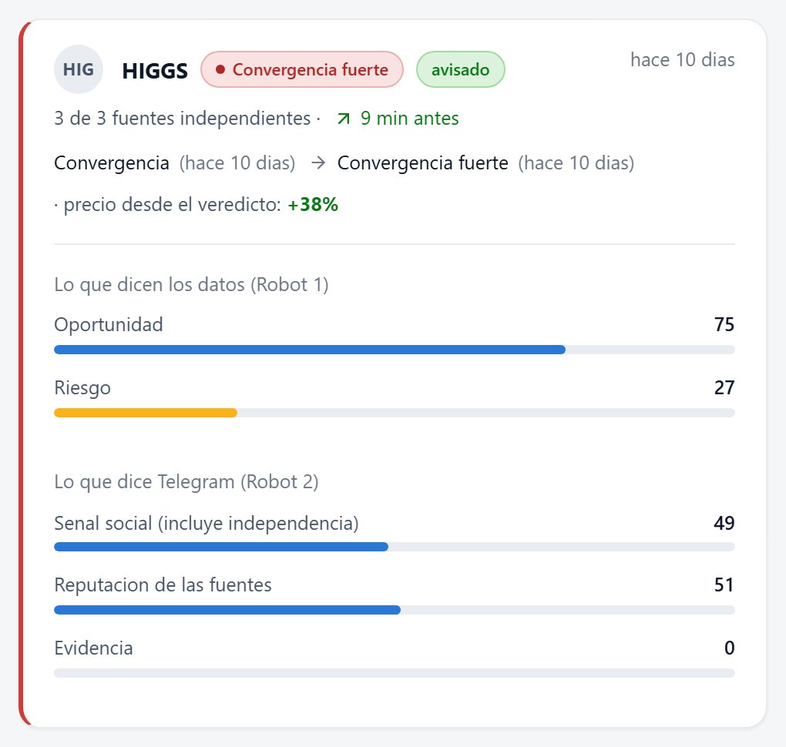
Medido desde el precio del momento del aviso: en las 24 horas siguientes llego a 8,4 veces ese precio, su punto mas bajo fue la mitad (0,52 veces), y a las 24 horas estaba al doble.
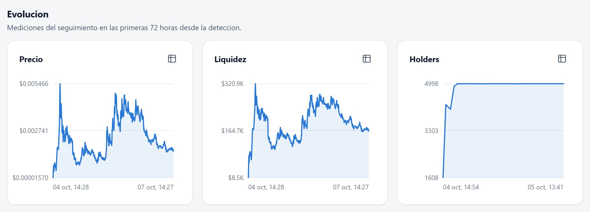
Si, y conviene explicar exactamente como. Desde el 20 de agosto el sistema pone la nota en el momento de detectar cada token, sin saber lo que va a pasar, y mide el resultado despues. Es una prueba con datos reales en la que no hay trampa posible: la nota no se puede ajustar mirando el resultado. Ya hay 28.817 tokens con el resultado cerrado.
Lo que todavia no existe es una simulacion de operaciones: cuando entrar, cuando salir y con que comisiones.
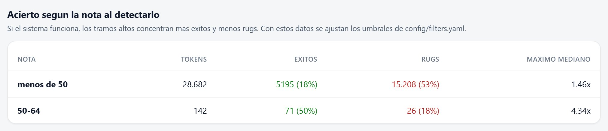
Medidos desde el precio del momento del aviso, en las 24 horas siguientes:
Y pasadas las 24 horas, solo el 37 % seguia por encima del precio del aviso.
Los 3 de septiembre (ELON, TRENDS y DIABLO) no se pueden medir, porque los precios de esos dias se perdieron con el cambio de servidor. Los 10 desde el 2 de octubre, medidos desde el precio del aviso:
| Token | Aviso | Maximo en 24 h | Minimo en 24 h | A las 24 h |
|---|---|---|---|---|
| HIGGS | 4 oct, 14:46 | 8,4x | 0,52x | 2,03x |
| HOTBOT | 2 oct, 07:56 | 7,5x | 0,77x | 3,75x |
| SOLBORN | 5 oct, 17:31 | 7,1x | 0,68x | 0,20x |
| POOPYBOT | 3 oct, 00:03 | 4,4x | 0,12x | — |
| SS | 2 oct, 08:36 | 1,50x | 0,01x | — |
| memeyin | 3 oct, 00:46 | 1,43x | 0,01x | — |
| Giko * | 2 oct, 07:48 | 1,13x | 0,19x | — |
| PRESSURE | 3 oct, 03:10 | 1,00x | 0,15x | 0,03x |
| HODL | 5 oct, 20:52 | 0,78x | 0,23x | 0,02x |
| BB * | 12 oct, 09:45 | 0,78x | 0,46x | — |
1,00x es el precio del aviso. "—": a las 24 horas el seguimiento ya se habia cerrado porque el token se habia hundido o se habia quedado sin liquidez. *: muy pocas mediciones despues del aviso, cifra aproximada.
Resumen: 4 llegaron a multiplicar su precio entre 4 y 8 veces, 3 subieron entre un 13 % y un 50 %, y 3 no subieron. Y 7 de los 10 cayeron mas de la mitad en algun momento de esas 24 horas. Son todavia pocos casos para sacar conclusiones firmes.
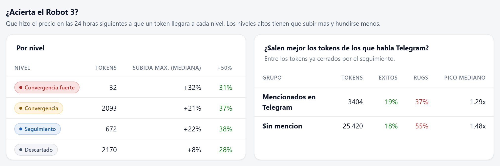
La conclusion honesta. El sistema encuentra tokens que se mueven y aparta muy bien los que acaban en estafa. Pero en este tipo de tokens la subida es rapida y la caida tambien, asi que la ganancia depende de vender a tiempo. El siguiente paso logico seria simular reglas de salida (por ejemplo, vender al doble o cortar perdidas a cierto punto) sobre todos los avisos ya enviados, para saber con datos reales que estrategia habria funcionado.
Punto por punto, frente a lo que se pidio para cada robot. Lo que falta es lo mismo que figuraba en el documento de alcance de la entrega.
| Robot 1 · lo pedido | Estado |
|---|---|
| Deteccion de tokens recien creados, microcaps y lanzadores (Pump.fun y otros), en Solana y Base | Hecho |
| Preventas y airdrops. El sistema ve los tokens en cuanto tienen pool de compraventa, y una preventa todavia no lo tiene | No incluido |
| Capitalizacion, liquidez, volumen y operaciones | Hecho |
| Crecimiento de holders y compradores | Hecho |
| Concentracion de las principales carteras | Hecho |
| Cartera del creador | Hecho |
| Insiders: se detectan los patrones (compras en el mismo bloque, saldos identicos, quien financio al creador), pero no el rastreo del dinero varios saltos hacia atras | Parcial |
| Movimientos sospechosos, bots y manipulacion | Hecho |
| Seguridad del contrato, mint y freeze authority, permisos | Hecho |
| Liquidez anadida o retirada, con aviso de peligro | Hecho |
| Actividad en Telegram | Hecho (Robot 2) |
| Actividad en X (Twitter) y Discord. X ya no da acceso gratuito a su API | No incluido |
| Clasificacion por narrativa (IA, DeFi, gaming, memecoin...) | No incluido |
| Carteras que historicamente entran pronto en proyectos que funcionan: los datos ya se guardan (389.000 movimientos de 151.000 carteras), falta la parte que los analiza | Parcial |
| Nota de oportunidad y de riesgo con los motivos explicados | Hecho |
| Panel web y avisos por Telegram (ademas, por Discord) | Hecho |
| Validacion con datos reales: medicion de resultados desde el 20 de agosto. Falta la simulacion de operaciones (punto 6) | Parcial |
| Codigo fuente, documentacion de las APIs y verificacion de los datos en la blockchain | Hecho |
| Robot 2 · lo pedido | Estado |
|---|---|
| Buscar en Telegram en espanol, portugues e ingles. Busca en los tres idiomas, aunque hoy casi todos los canales que aportan tokens publican en ingles | Hecho |
| Analizar conversaciones y canales, y encontrar canales nuevos por su cuenta | Hecho |
| Separar las senales utiles del ruido, el spam y la informacion poco fiable | Hecho |
| Identificar las fuentes de interes (reputacion medida con resultados reales) | Hecho |
| Entregar la informacion en espanol. Los resumenes los hace una IA con plan gratuito que da para unos 250 mensajes al dia; los demas se filtran y se sacan sus tokens igualmente, pero sin resumen. Resumirlos todos requiere un plan de pago de ese servicio | Parcial |
| Robot 3 e integracion · lo pedido | Estado |
|---|---|
| Recibir lo del Robot 2 y cruzarlo con el analisis del Robot 1 | Hecho |
| Verificar la coherencia entre las dos fuentes | Hecho |
| Determinar que oportunidades merecen atencion y seguimiento (niveles y aviso) | Hecho |
| Los tres funcionando como un solo sistema: misma base de datos y mismo panel, y el Robot 2 pasa cada token al Robot 1 para que lo analice | Hecho |
Si te viene bien, lo vemos juntos en una videollamada corta con el panel abierto y te enseno cada paso en directo.